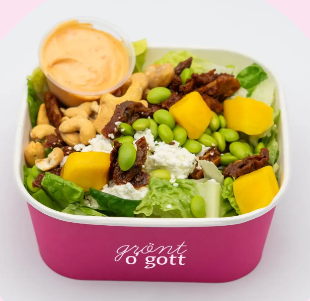
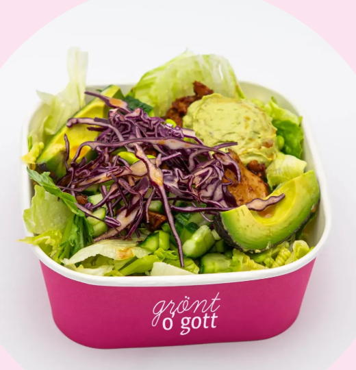
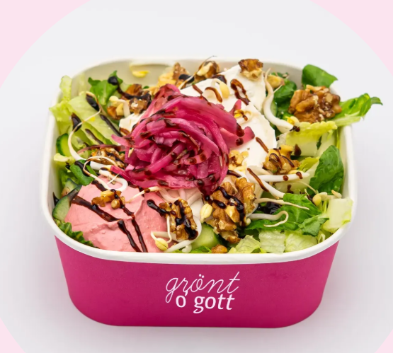
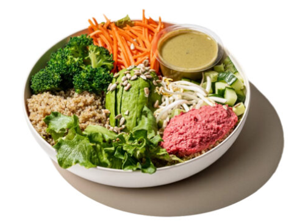
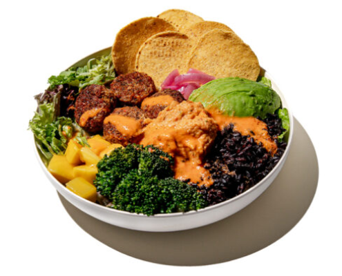
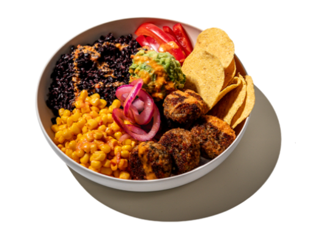

Grönt & Gott
Vegetariska och veganska bowls
25–40 min

Vegetarisk biff
Pulled Oumph, salladsost, soltorkad tomat, sojabönor, mango, cashewnötter och kimchimayo.
139 kr

Vegan
Pulled Oumph, rödkål, gurka, sojabönor, avokado, örthummus och örtvinägrett.
129 kr

Chévre
Chevréost, rödbetshummus, picklad lök, böngroddar, gurka, valnötter, balsamicokräm
139 kr
Holy Greens
Fräscha sallader och bowls
25–40 min

Grönsakslandet vegansk
Rödbetshummus, vit quinoa, salladsmix, avokado, ingefärspicklad morot, broccoliträd, gurka, böngroddar, rostade solroskärnor och basilika-citrondressing.
129 kr

Mexicali vegansk
Varma vegobites från Oh Mungood, svart råris, chipotlecrème, broccoliträd, picklad rödlök, mango, avokado, majschips och paprika-chilidressing.
139 kr

Holy Guacamole vegansk
Varma vegobites från Oh Mungood, varmt svart råris, guacamole, marinerad majs, paprika, picklad rödlök, majschips och paprika-chilidressing.
139 kr